Data Base Analysis with Dplyr

Authors
Julieth Riveros
Juan David León
Agenda
- OECD Worlwide Migrations
- Amsterdam AirBnB
OECD Worlwide Migrations
Database Source
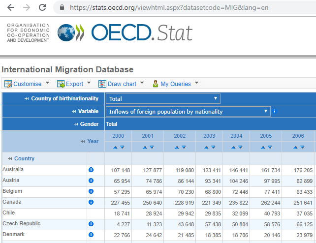Database
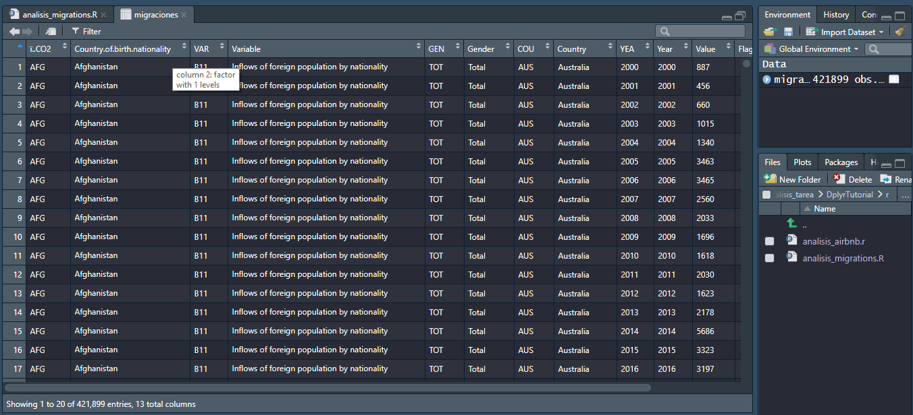Database Description
- Contains data about population migrations in different countries of the OECD from 2000 to 2017.
- Columns: 13
- Rows: 421'899
- CO2/Country.of.birth.nationality: Nationallity of the people moving
- COU/Country: Country where migration is happening
- Year: The year asociated to the value
Database Description
VAR/Variable: specifies the type of Value
- B11: Inflows of foreign population by nationality (Immigration)
- B12: Outflows of foreign population by nationality (Emmigration)
- B13: Inflows of asylum seekers by nationality
- B16: Acquisition of nationality by country of former nationality
Database Description
- B14: Stock of foreign-born population by country of birth
- B15: Stock of foreign population by nationality
- B23: Stock of foreign-born labour by country of birth
- B24: Stock of foreign labour by nationality
- Value: The value associated to the variable
Source Code
The source code explained here can be found in the following file:
analisis_migrations.rLoading the Database into R
Reading the migrations.csv database.
migraciones <- read.csv("data/migrations.csv")
Loading the Dplyr library into R
Reading the migrations.csv database.
library(dplyr)
Which are the different values of the VAR/Variable column?
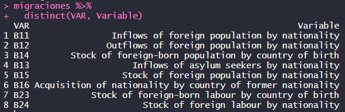Which are the different nationalities that are taken into account?
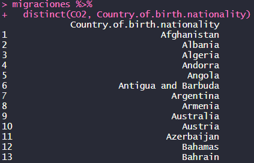Which are the different countries that register their migrations?
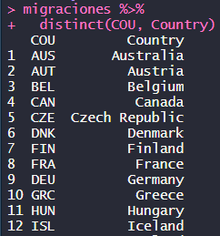Which years are taken into consideration?
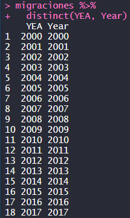Which are the immigration statistics for Colombia in 2016?
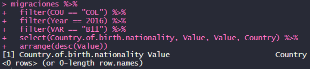Colombia didn't send any information.
Which are the immigration statistics for colombians worlwide in 2016?
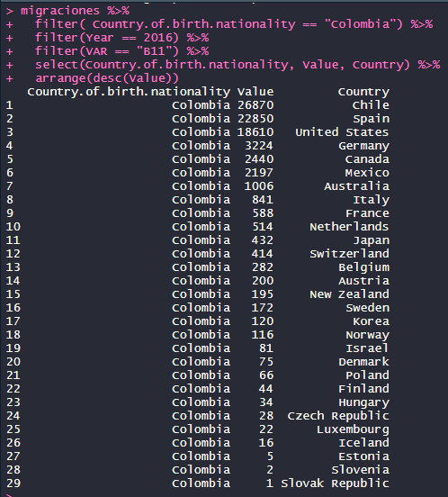Which are the emmigration statistics for colombians worlwide in 2017?
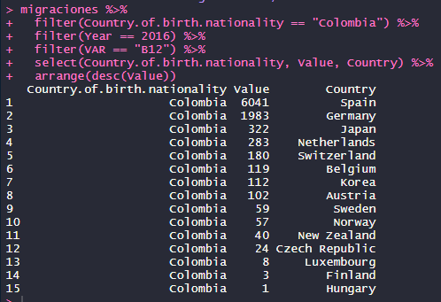Which were the top 6 countries with more emmigrations in 2008?
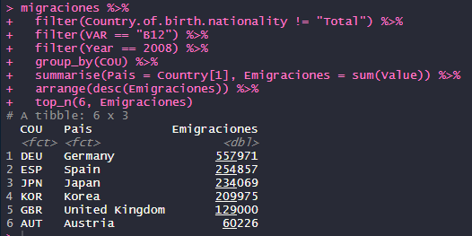Which were the top 6 countries with less emmigrations in 2010?
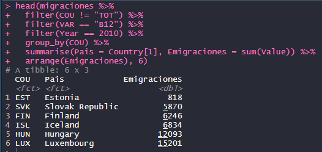From which country were the people that emmigrated most worldwide in 2016?
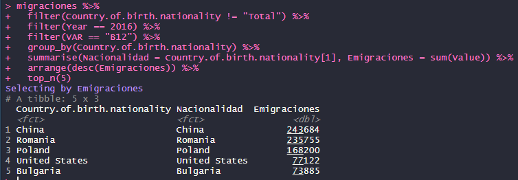From which country were the people that immigrated most worldwide in 2016?
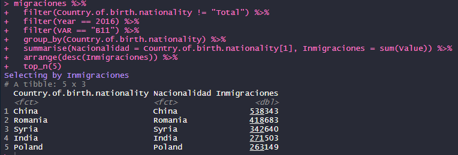How many colombians were born in the US in 2017?
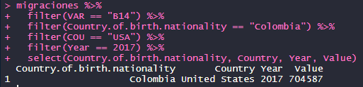Amsterdam AirBnB
Database Source

Database
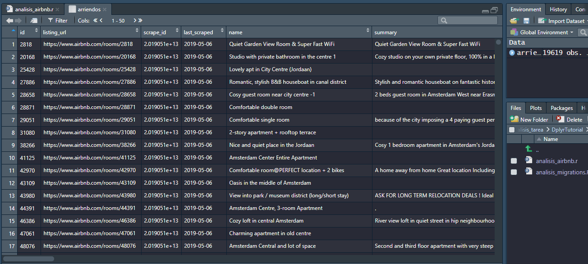Database Description
- Contains data about all the AirBnB listings in Amsterdam that were available in 06 May, 2019.
- Columns: 106
- Rows: 19'619
Database Columns
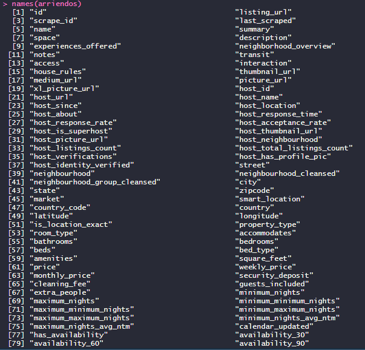Database Columns
| Name | Meaning | Example |
|---|---|---|
| listing_url | URL where the listing is published | https://www.airbnb.com/rooms/2818 |
| host_name | Name of the host | Cristian |
| neighbourhood | Name of the neighbourhood | Jordaan |
Database Columns
| Name | Meaning | Example |
|---|---|---|
| beds | Number of beds | 4 |
| price | Price (as an R factor) | $184.00 |
| amenities | What you will find in the room | {TV, Wifi, Pets} |
Source Code
The source code explained here can be found in the following file:
analisis_airbnb.rLoading the Database into R
Reading the migrations.csv database.
arriendos <- read.csv("data/amsterdam_airbnb.csv")
Loading the Dplyr library into R
Reading the migrations.csv database.
library(dplyr)
Which are the different license types?
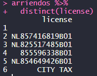Which are the different cancellation policies?
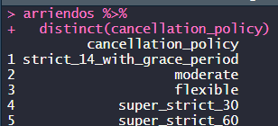In which cities are the hosts located?
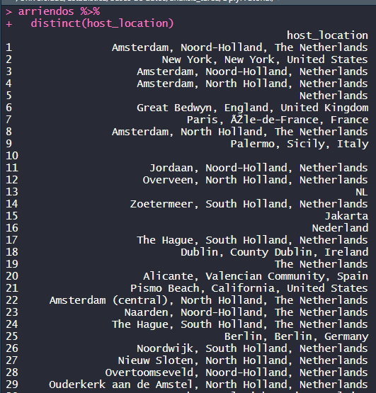In which neighbourhoods are there listings?
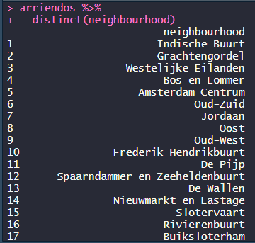Which are the top 5 hosts with more listings?
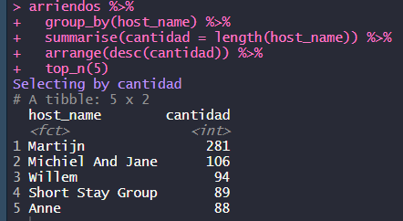Which are the top 5 hosts that allow people to stay more days and how many nights?

Which are the top 5 listings that are more expensive?
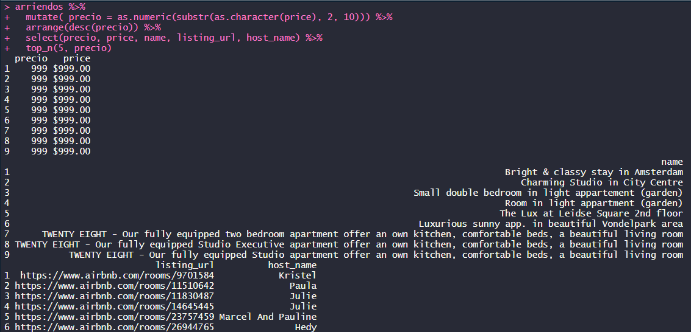Which are the top 3 neighbourhood with more listings?
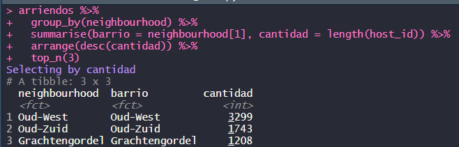Which listings have less bathrooms?
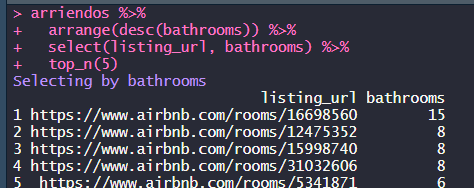Which listings have more beds?
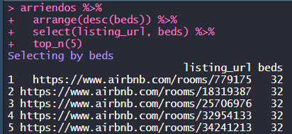Which listings have an area above 100 meter squared?
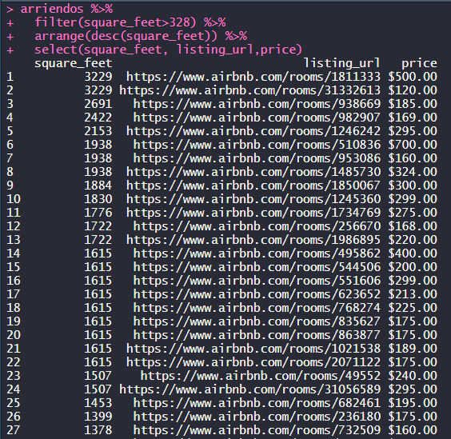Which listings have the worst score for host communication?
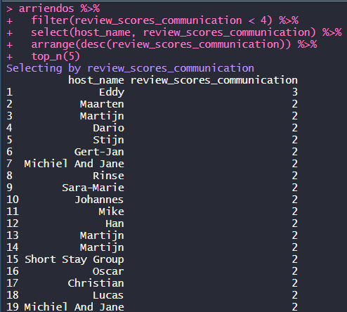How many listings have no TV?
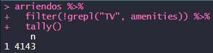Joins Explained
Simple Table Examples
Join functions are part of the dplyr library.
- Cities
- Persons
The source code explained here can be found in the following file:
joins_explained.rCities
> cities <- data.frame("id" = 1:5,
"name" = c("Paris","Tokyo", "Bogotá", "Barcelona", "New York"))
> cities
id name
1 1 Paris
2 2 Tokyo
3 3 Bogotá
4 4 Barcelona
5 5 New York
Persons
> persons <- data.frame("id" = 1:4,
name = c("Cristian", "Jean", "Hikimura", "Steven"),
id_cities = c(3, 1, 2, 5))
> persons
id name id_cities
1 1 Cristian 3
2 2 Jean 1
3 3 Hikimura 2
4 4 Steven 5
Inner Join
> inner_join(cities, persons, by=c("id" = "id_cities"))
id name.x id.y name.y
1 1 Paris 2 Jean
2 2 Tokyo 3 Hikimura
3 3 Bogotá 1 Cristian
4 5 New York 4 Steven
Left Join
> left_join(cities, persons, by=c("id" = "id_cities"))
id name.x id.y name.y
1 1 Paris 2 Jean
2 2 Tokyo 3 Hikimura
3 3 Bogotá 1 Cristian
4 4 Barcelona NA <NA>
5 5 New York 4 Steven
Right Join
> right_join(persons, cities, by=c("id_cities" = "id"))
id name.x id_cities name.y
1 2 Jean 1 Paris
2 3 Hikimura 2 Tokyo
3 1 Cristian 3 Bogotá
4 NA <NA> 4 Barcelona
5 4 Steven 5 New York
Full Join
> full_join(persons, cities, by=c("id_cities" = "id"))
id name.x id_cities name.y
1 1 Cristian 3 Bogotá
2 2 Jean 1 Paris
3 3 Hikimura 2 Tokyo
4 4 Steven 5 New York
5 NA <NA> 4 Barcelona
Full Join
> full_join(cities, persons, by=c("id" = "id_cities"))
id name.x id.y name.y
1 1 Paris 2 Jean
2 2 Tokyo 3 Hikimura
3 3 Bogotá 1 Cristian
4 4 Barcelona NA <NA>
5 5 New York 4 Steven
Joinning Migrations and AirBNB Databases
First Try
- Try to join by Country
- AirBNB: host_location
- Migrations: Country.of.birth.nationality
Adding a Country Column to the AirBNB table
arriendos_filtrados1 <- arriendos %>%
mutate(Country = extractCountry(host_location)) %>%
select(host_name, Country)
Adding a Country Column to the AirBNB table
extractCountry <- function(l) {
l <- sapply(l, as.character, USE.NAMES = FALSE)
l <- sapply(l, strsplit, ",", USE.NAMES = FALSE)
l <- sapply(l, tail, n = 1L, USE.NAMES = FALSE)
l <- sapply(l, trimws, USE.NAMES = FALSE)
return(l)
}
Error joining List and Factor
> arriendos_filtrados1 %>%
inner_join(migraciones, by=c("Country"="Country.of.birth.nationality"))
Error: Can't join on 'Country' x'Country.of.birth.nationality'
because of incompatible types (list / factor)
Error joining List and List
> migraciones %>%
mutate(CountryList = as.list(sapply(migraciones$Country.of.birth.nationality, as.character)))
> arriendos_filtrados1 %>%
inner_join(migraciones_filtradas, by=c("Country"="CountryList"))
Error: Can't join on 'Country' x 'CountryList'
because of incompatible types (list / list)
Second Try
- Try to join by Country Hash
- AirBNB: create a number hash from country
- Migrations: create a number hash from Country.of.birth.nationality
Hash Function?
A hash function is a function that maps data of arbitrary size onto data of a fixed size. This is usually represented in hexadecimal. We convert from hexadecimal to decimal to work with numbers and be able to join.
- md5
- sha - sha256 - sha512
- crc32
- xxhash32 - xxhash64
- murmur32
Loading tables and libraries
# loading both tables
arriendos <- read.csv("data/amsterdam_airbnb.csv")
migraciones <- read.csv("data/migrations.csv")
# loading dplyr library
library(dplyr)
library(digest)
countryToHash function
countryToHash <- function(c) {
c <- sapply(c, as.character)
c <- sapply(c, digest, algo="xxhash32")
c <- sapply(c, strtoi, 16)
return(c)
}
Creating hash from country in airbnb
arriendos_filtrados <- arriendos %>%
mutate(Country = extractCountry(host_location)) %>%
mutate(CountryHash = countryToHash(Country)) %>%
filter(!is.na(CountryHash)) %>%
filter(!is.na(Country))
}
Creating hash from Country.of.birth.nationality in migrations
migraciones_filtradas <- migraciones %>%
mutate(CountryHash = countryToHash(Country.of.birth.nationality)) %>%
filter(!is.na(CountryHash))
Joining processed tables by hash
migraciones_filtradas %>%
inner_join(arriendos_filtrados, by=c("CountryHash" = "CountryHash"))
Joined Result
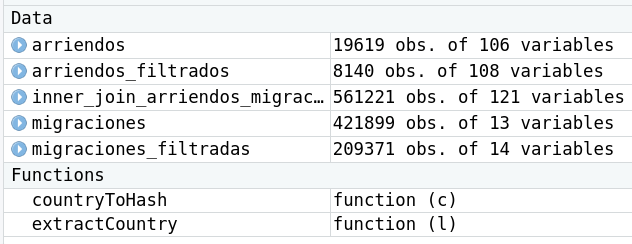- 108 + 14 - 1 = 121
- The column HASH is repeated
- observations: 8140 * 209371 = 1704279940 ≠ 561221
- Not all countries in airbnb are in migrations
- Not all countries in migrations are in airbnb
- Some observations are filtered by the inner_join
Question1
Question2
Question3
Question4
Question5
Question6
Question7
Question8
Question9
Question10